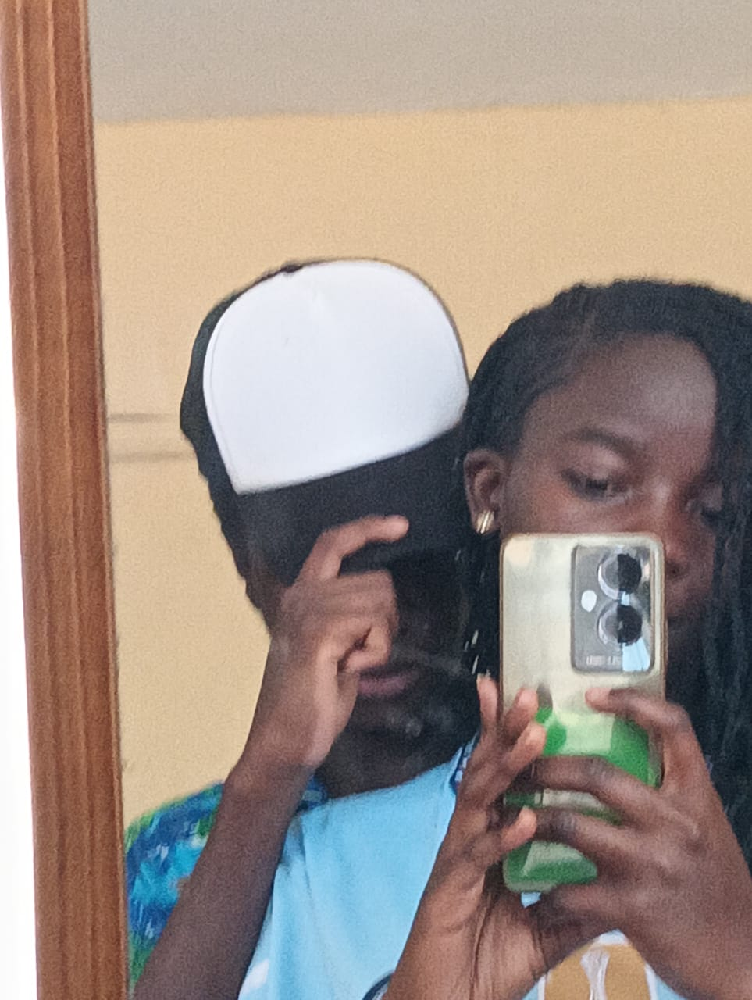

Brian Shevin Dola / WDD130
Hello! My name is Brian Shevin Dola and I am from Nairobi, Kenya.
I enjoy playing basketball and spending time with someone I love the most.
Have always loved the game, but it has not been without its sacrifices.
In high school, I used to eat lunch with my English teacher because I did not have a core group of friends to sit with since I was always playing basketball.
Before I was even born it seemed it was in my destiny to be a basketball player.
My mom won a high school state championship and was some kind of legend in town.
I still had aspirations of playing at a higher level, but my confidence was completely shaken when I did not make varsity basketball as a freshman.
There were four freshman who had been invited to play fall ball with the varsity team from the year before and I was the only one who did not make varsity.
© 2023 Brian Shevin Dola. All rights reserved.